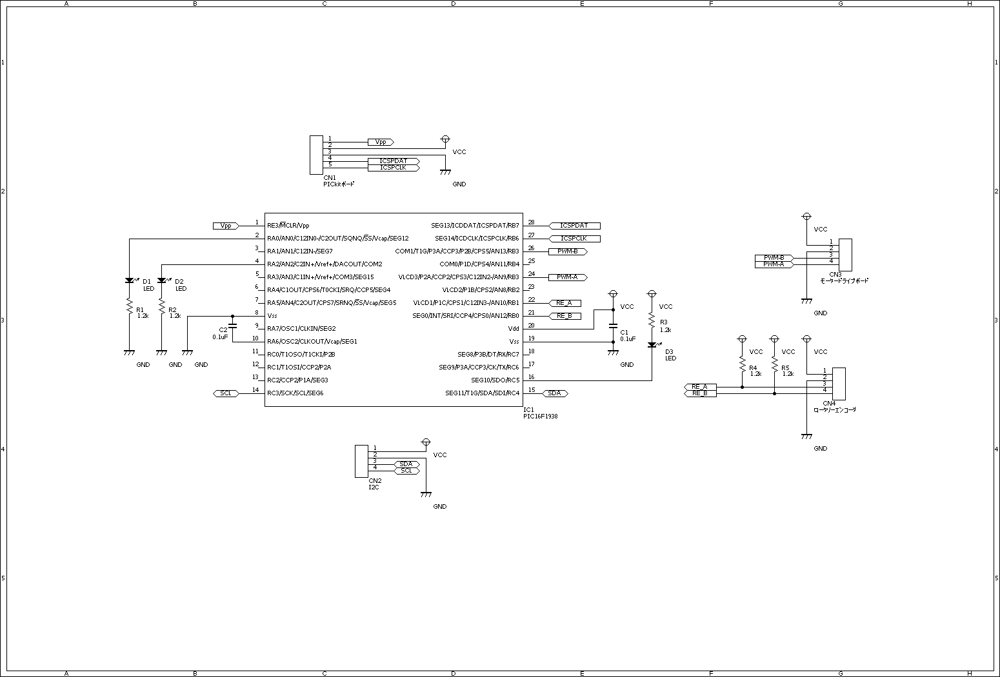
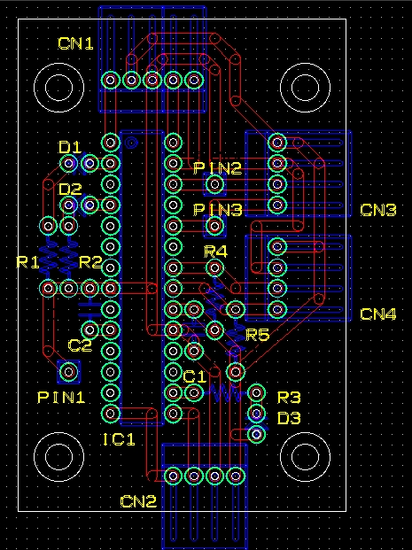
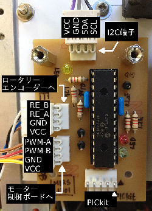

はじめに
本ドキュメントは、MIRS1301の新モーター制御ボードおよびモーター駆動ボードの詳細設計書である。
変更点概要
I2Cインターフェース搭載
MIRS1301の通信革命のため、モーター制御ボードにもI2Cインターフェースを搭載させる。小型化
従来のモーター制御ボードの欠点である基板の大きさを解消するために、
ICや素子の必要性について見直して回路規模を縮小させる。
分割
標準機のモーター制御ボードの故障箇所は、
フォトカプラとモータードライバICがほとんどで、PICなどの制御系の故障頻度は低い。
そこで故障頻度の高い駆動系部分をモーター駆動ボードとして独立させる。
これにより「故障頻度の高い基板ほど整備しやすい場所に置く」ことができるようになる。
また、制御と駆動では必要となる知識が大きく異なり、一度に変更する機会はあまり無い。
基板を分割することで、片方の知識しか無い学生でも個別に改良可能になる。
2逓倍
標準のモーター制御ボードは、 ロータリーエンコーダーからの信号(A,B)のうち、Aの立ち上がりしか使用していない。
今回は、Aの立ち下がりも使用することでエンコーダーの分解能を上昇させる。
制御方式
従来のモーター制御ボードの欠点として、モーター始動時の応答時間が長いことが挙げられる。
この遅延時間はモーターごとに異なり、走行開始時の誤差が無視できない。
これは始動時と始動後で、モーターの特性が大きく異なるためである。
そこで、今回は始動時にオフセット値を追加することで応答時間を短縮する。(具体的な内容は後述する。)
仕様詳細
回路図
回路図を以下に示し、回路面での変更点を説明する。
 
まず標準機のモーター制御ボード に存在していたトランジスタは不要と判断し廃止している。
ロータリーエンコーダー E6A2-CWZ5C の カタログ(PDF)によると
オープンコレクタ(30mAまで吸い込み可)で出力されるとあるためである。
つぎに、回転方向検出用のフリップフロップ及びNANDゲートを廃止している。
ロータリーエンコーダーからの信号の変化を毎回割り込み処理で検出すれば、
PIC内の処理だけで回転方向の検出が可能なためである。
最後に、モータードライバ:MP4212周辺の回路を変更してフォトカプラを従来の4つから2つに減らしている。
この部分の回路は以下の2つのサイトで紹介されているものの簡略版である。
舞鶴工業高等専門学校 電子制御工学科 町田秀和研究室 | 各種DCモータドライバ回路集
渓鉄 - KeitetsuWorks|Nch MOS FETとPch MOS FETで構成するモータドライバ
具体的には、Pch-MOSとNch-MOSでCMOSを作り、入力の信号線を2本に減らしている。
C-MOS構造であるため、モーターは常に正転・逆転・ブレーキの状態であり、フリー状態にならない。
制御ボードと駆動ボードを接続するためのコネクタには、現在使用していないGNDピンが存在する。
この理由は、今後モーター駆動ボードのみを改良しフォトカプラが変更された場合に、
GNDピンが必要になる可能性があるためである。
制御方式
モーター始動時にオフセットを予め加えておくことで、始動時の応答時間を減少させる。
また標準機のPI制御にD制御を加えることと、
制御周期を従来の100msecから10msecまで短くすることで、
モーター始動直後の急激な速度変化に対する即応性を上げる。
また速度の計算に重み付け無しの移動平均法を使用することで、処理時間を抑えつつ1msecごとの速度計算を実現させる。
ロータリーエンコーダーとの通信不良時などを考慮して、
出力を直接指定可能なモードも実装する。
通信プロトコル
コマンドバイトと引数バイト列を送信したあと、戻値バイト列を受信する。
多バイトデータのエンディアンは全てビッグエンディアンである。
コマンドのリストを以下に列挙する。通信プロトコル 機能 コマンド 引数 戻値 ハードウェアリセット 0x00 無し 無し ソフトウェアリセット 0x01 無し 無し エコーバック 'e' 任意(1Byte) 'e', 引数(1Byte) モーターデータ取得 0x80 無し 経過時間 [msec] (4Byte)
回転角 [pulse] (4Byte)
角速度 [pulse/sec] (2Byte)
Duty比 [1/1023] (2Byte)
回転角初期化 0x81 回転角 [pulse] (4Byte) 無し PID制御データ取得 0x82 無し 制御周期 [msec] (1Byte)
比例ゲイン [1/1023 * sec/pulse] (2Byte)
積分ゲイン [1/pulse] (2Byte)
微分ゲイン [sec^2/pulse] (2Byte)
目標角速度 [pulse/sec] (2Byte)
偏差 [pulse/sec] (4Byte)
積分項 [pulse] (4Byte)
微分項 [pulse/msec^2] (4Byte)
PID制御パラメータ設定 0x83 制御周期 [msec] (1Byte)
比例ゲイン [sec/pulse] (2Byte)
積分ゲイン [1/pulse] (2Byte)
微分ゲイン [sec^2/pulse] (2Byte)
無し Duty比直接設定 0x90 無し Duty比 [1/1023] (2Byte) 目標角速度設定 0x91 無し 目標角速度 [pulse/sec] (2Byte)
作成方法
基板加工機用 mit ファイル
MotorControlBoard.mit
MotorDriveBoard.mit
パターン図と実装図
パターン図と実装図を以下に示す。
 
 
使用部品
作成に必要な部品を以下に示す。
モーター制御ボード部品表 記号 部品名 商品名 数量 備考 IC1 PIC PIC16F1938 1 モーター制御用 R1~3 抵抗 1.2kΩ 3 LEDの電流制限用 R4,5 抵抗 1.2kΩ 2 ロータリーエンコーダー用プルアップ抵抗 C1,C2 セラミックコンデンサ 0.1uF 2 パスコン D1 LED 緑色LED 1 デバッグ用 D2 LED 赤色LED 1 デバッグ用 D3 LED 黄色LED 1 デバッグ用 CN1 コネクタ MOLEX 5pin 1 PICkitボード用 CN2 コネクタ MOLEX 4pin 1 I2Cバス用 CN3 コネクタ MOLEX 4pin 1 モーター駆動ボード用 CN4 コネクタ MOLEX 4pin 1 ロータリーエンコーダー用 PIN1 ピンヘッダ 1pinヘッダ 1 デバッグ用GNDピン PIN2,3 ピンヘッダ 1pinヘッダ 2 デバッグ用PWM出力確認用 モーター駆動ボード部品表 記号 部品名 商品名 数量 備考 R1,R2 抵抗 300Ω 2 電流制限用 R3,R4 抵抗 150Ω 2 プルアップ抵抗 R5~8 抵抗 10Ω 4 ダンパ抵抗 C1,C2 セラミックコンデンサ 0.1uF 2 パスコン IC1,IC2 フォトカプラ TLP552 2 絶縁用 IC3 モータードライバ MP4212 1 CN1 コネクタ MOLEX 4pin 1 モーター制御ボード用 J1 DCジャック 2.1mm径 1 電源用 J2 DCジャック 2.1mm径 1 モーター用 PIN1 ピンヘッダ 1pinヘッダ 1 デバッグ用GNDピン PIN2,3 ピンヘッダ 1pinヘッダ 2 フォトカプラ動作確認用 PIN4,5 ピンヘッダ 1pinヘッダ 2 モータードライバ動作確認用 プログラム
MIRS1301 エレクトロニクス詳細設計書からダウンロードできる。

{kind=link}
{kind=link}
{kind=link}
テスト方法
MIRS1301 ソフトウェア詳細設計書からダウンロードできるファイルに、テストプログラムが含まれている。
判明している問題点と解決案
今回はロータリーエンコーダーからの信号(A,B)のうち、Aの立ち上がり/立ち下がりエッジしかカウントしていない。
Bの立ち上がり/立ち下がりエッジもカウントすることで分解能をさらに上げることができる。
モーター駆動ボードにフリー状態が存在しないことによる問題は特に確認されなかった。